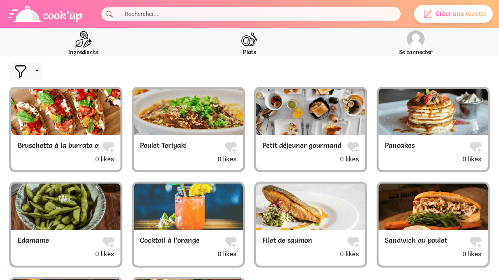
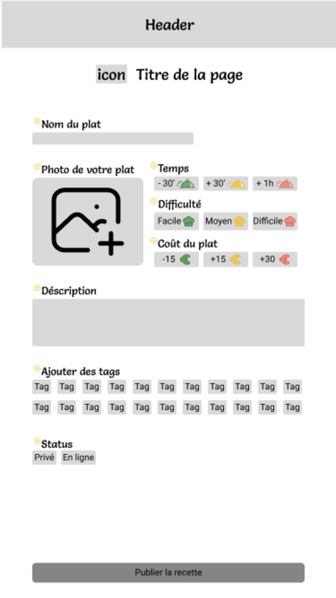
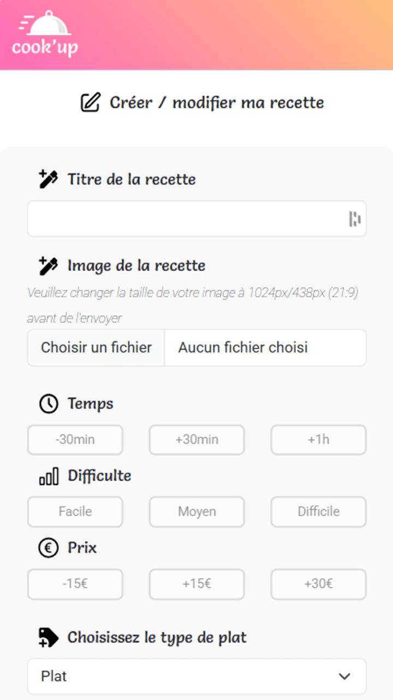

Cookup is my second school project (Semptember 2024 - December 2024).
I made it in collaboration with Wassim Jniouen.
We had a theme, which was "mutual assistance", and had to imagine a whole website and code it with Wordpress.
This one was way more difficult because we had half the time we had on Dyna-livres, we were only two and we needed to learn a lot of things such as PHP, Bootstrap, Jquery or Wordpress from nothing.
There's still a lot of details that we couldn't fix in time, but we did the functionalities we wanted to.
This project had a lot more Figma and project management to do.

Create recipe Figma wireframe

Website create recipe page
Cookup is a responsive, community recipe posting website.
After logging in, people are able to create a recipe with an image, descriptions and tags.
After a short verification from a moderator, the recipe is posted and everyone can try it.
Users are able to filter every recipe with ingredients, type of dish, date of publishing, tags such as price or difficulty.